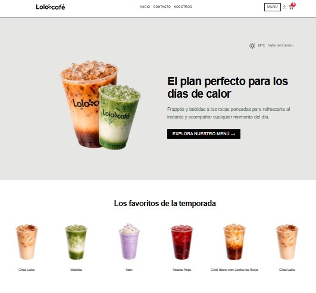
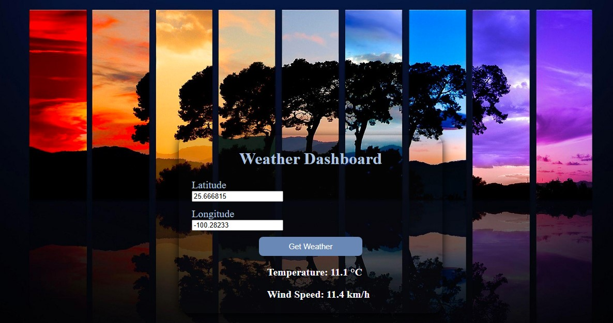
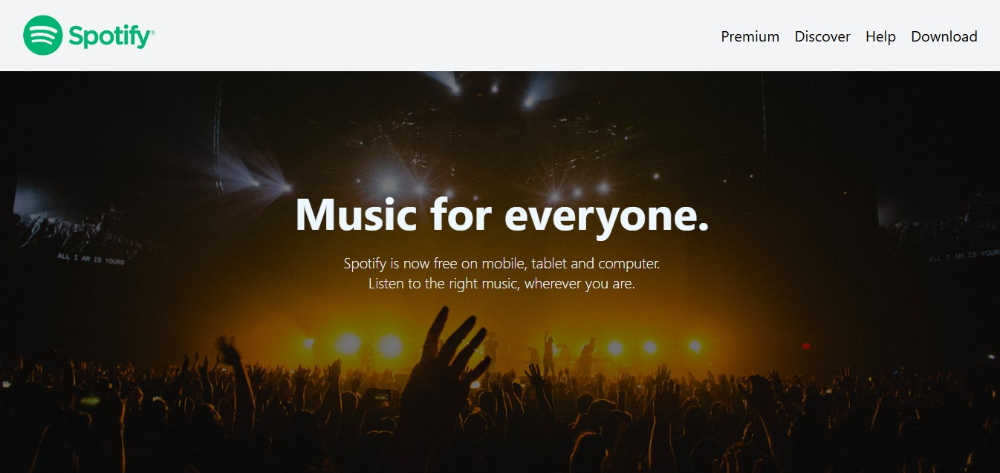

Proyectos

Lolo's Café
Desarrollo en equipo de una plataforma web responsive para una cafetería local, enfocada en mejorar la experiencia de los clientes al consultar el menú y realizar pedidos en línea. El proyecto se desarrolló bajo metodología SCRUM, con entregas incrementales y colaboración constante con los stakeholders para ajustar funcionalidades y mejorar la experiencia de usuario.
Aprendizajes y experiencia adquirida:
-Desarrollo de interfaces web responsivas y enfocadas en la usabilidad.
-Trabajo colaborativo bajo metodología ágil (SCRUM) con organización de tareas y seguimiento del proyecto.
-Gestión de versiones y colaboración en código mediante Git y GitHub.
-Participación en el diseño de la estructura del sistema y preparación para la integración entre front-end, backend y base de datos.
-Comunicación con clientes reales para entender necesidades y ajustar el desarrollo del producto.

API Weather Lab
Ejercicio práctico donde consumo una API del clima para mostrar información dinámica.
Check it out!
spotify-clone
Clon de una página simple de Spotify desarrollado con HTML y CSS, enfocado en la maquetación y el diseño visual. Proyecto realizado como práctica inicial en desarrollo web.
Check it out!